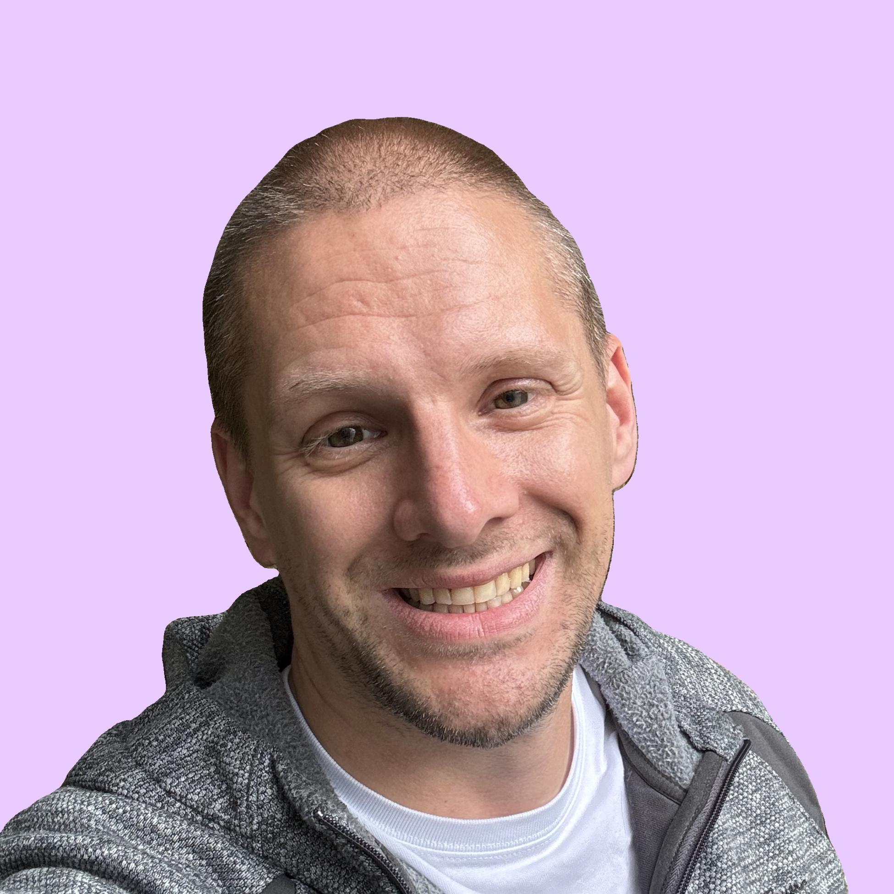

Systems Engineer + Founder: WIRED WORKS
Years Active (2015 - Present)

Hello there! I'm Charles and I like to think of myself as "talented" but "humble" Systems Engineer - I'm currently working on tooling, automation, and endpoint management on the Starbucks Connect Platform (primarily in PowerShell).
Prior to this role, I worked in Systems Administration, IT Support, and Field Services for several iconic Seattle-based companies (Brown Bear & Seattle Goodwill) as well as larger global organizations.
In my current role I work mostly in PowerShell and Kaseya VSA pseudocode but I have also worked Python in prior roles, and I've done simple web development with JavaScript, HTML, and CSS. I love solving complex problems no matter what coding or scripting language I'm working with.
I really enjoy working with technology but my favorite part of the job is working with all the amazing customers (internal and external), co-workers, and leaders, that I've met over my career. People are always the reason.
Feel free to reach out via LinkedIn if you're looking to talk tech or you're looking for an engineer to join your team. I love making new connections and expanding my network. After all - isn't human connection the meaning of everything!
Systems Engineer - Starbucks
(July 2023 to Present)
Developed tooling and automation in PowerShell for Kaseya VSA (MDM). Solved complex and highly time-sensitive (hardware/software/network) issues. Mentored systems analysts and provided support and oversight to 3rd-party vendors. Worked on large-scale patching, script deployment, and system testing projects.
- Jira & Confluence
- CrowdStrike (Falcon)
- Kaseya (VSA)
- Oracle (Simphony)
- HashiCorp (Vault)
System Analyst - Starbucks
(September 2021 to June 2023)
Tier (3) technology support - overseeing activations process for licensed stores. Developed internal documentation for standard processes and troubleshooting. Solved complex and highly time-sensitive (hardware/software/network) issues. Mentored systems analysts and provided support and oversight to 3rd-party vendors.
- Salesforce
- Splunk
- Kaseya (VSA)
- ServiceNow
- Oracle (Simphony)
IT Support Technician - Axon
(July 2020 to August 2021)
Tier (1/2/3) technology support for 2,000+ users (North America & Global). Support via phone, Slack, email, Zoom, ServiceNow, BeyondTrust, and in-person. Asset management and hardware support for Windows, macOS, and Linux machines. Worked on Windows Autopilot, OS image creation, and Linux software integration.
- Azure AD
- Jamf
- Microsoft 365
- Okta
- Dynamics 365
IT Support Specialist - Car Wash Enterprises
(October 2019 to June 2020)
Tier (1/2/3) technology support for 250+ users at 40+ locations in Washington. Managed vendors, billing, licensing, asset management, and support documentation. Performed comprehensive licensing and inventory audits for all IT assets. Implemented SLAs, naming conventions, AD restructure, and password management.
- AD & Exchange
- Microsoft 365
- GFI Mail-Filtering
- TeamViewer
- Solar Winds
Field Services Engineer - Seattle Goodwill
(October 2015 to December 2017)
Tier (1/2/3) technology support for 1000+ users at 25+ locations in Washington. Supported hybrid-VOIP phone system, VMware VDI, and A/V systems. Maintained server and network infrastructure, power, cabling, and cooling. Performed full life-cycle support for laptops, desktops, and mobile (Android/iOS).
- AD & Exchange
- KACE
- Dynamics (RMS/GP)
- McAfee ePO
- IssueTrak
Master of Science - Cybersecurity & IA
Western Governors University (Graduated: 2019)
After I completed my Bachelor of Science degree, I had several years of experience working in technology and I started to think about what area I wanted to specialize in. Much like a lot of new entrants into the field I got interested in cybersecurity. At this point I as waffling between systems administration, system engineering, or cybersecurity.
So I decided to enroll in a Masters of Science program at WGU. I learned a lot during the program - inluding: crytopgraphy, secure coding practices, various security standards and frameworks, incident response management, and digial forensices. I burned the confidentiality, integrity, and availability model directly into my brain and snagged some more certifications.
Bachelor of Science - Information Technology
Western Governors University (Graduated: 2017)
Once I realized that I wanted to work in technology I transferred over my lower-division undergraduate classes into a Bachelor of Science program. I originally wanted to study computer science but I realized that I genuinely enjoyed working with hardware, and working directly with users, and I didn't want to be stuck in a cubicle coding all day.
The information technology at WGU seemed like a great marriage of lots of different elements: coding (front-end + back-end), databases, hardware, networking, application support, and cybersecurity. I got some certifications and my first job working in IT at Seattle Goodwill as a Field Services Engineer. It was a great opportunity to learn everything from the ground up.
Associate of Arts - Liberal Arts & Sciences
Green River College (Graduated: 2014)
Before I started working in technology, I wasn't really sure what I wanted to do, and so I decided to just start taking classes. I studied all the basics (including the three Rs: reading, writing, and arithmetic) at the college level. Throw in some symbolic logic, journalism, criminal justice, psychology, and a few interesting natural sciences classes, and I got a pretty well-rounded education.
During my studies I was working full-time as a security guard at at Amazon headquarters in Seattle. I met and chatted with a lot of software developers and got to learn about the cool problems they were trying to solve, and the cool technology they were building. I started to think that maybe I could do that.
Starbucks: HashiCorp (Vault) Code Refactor
One of the largest projects I took on in my current role was to refactor all our existing client-side Vault automation scripts and the associated deployment procedures to improve: logging, error handling, reliablity, and performance. The code essentially hadn't been updated for several years and everyone was too afraid to dig into all that code and break something, so I volunteered to rewrite it all. I also became the Vault SME on my team and led multi-team training sessions as well as developing documentation for the product.
Axon: Microsoft Intune Migration
During my tenure at Axon - the company was just in the process of moving onto the Microsoft Intune platform and utilizing Windows Autopilot to automate the deployment and configuration of Windows devices. I worked closely with the engineering team to configure and test the first devices, troubleshoot the configuration process, and configure the actual Intune cloud environment itself. This was an amazing learning opportunity for me and I'm super grateful I got to work on the project.
Car Wash Enterprises: AD Restructure & Asset Management
I was tasked with restructuring the Active Directory structure and creating a new naming convention for all our IT assets and locations. This also insolved a comprehensive audit and inventory process for all equipment at 40+ locations throughout Washington. I learned a lot about Active Directory and IT asset inventory management in general. The project was a huge success and made it much easier to track assets and navigate within our Active Directory environment.
Seattle Goodwill: Migration to VMWare Infrastructure
At the Job Training & Education Centers (JTECs) there was a huge push to move from traditional desktops to thin-clients backed by a central VMWare server cluster. I worked closed out with System Engineer and System Administrator to configure, test, and deploy this new equipment out to the field, and provide training and orientation to employees. The project massively reduced our reimaging and reconfiguration burden, as well as saving money, and lowering power consumption at sites. I also learned a ton about hypervisors, VMs, and thin clients.
Personal Code Project: Darkest Dungeon
My first computer was an Apple //e and I'm a sucker for old-school computer games. I remember having so much fun with simple text-based dungeon crawlers. So I decided to build one myself. It's fairly simple Flask-based website with an Nginix front-end. I hope to have it finished and ready to public consumption this year. Stay tuned for updates. I've learned so much throughout this process including containerization via Docker, handling application dependencies, and deploying to production via AWS.
Personal Business Project: WIRED WORKS
I created the WIRED WORKS brand in order to provide independent technology consulting services and technical product reviews on YouTube. I learned a lot and had a blast. I don't currently have any of my content published but I still have all the original video files. Someday I might move back into the entrepreneur space. Who knows, maybe you'll see me in your YouTube feed.